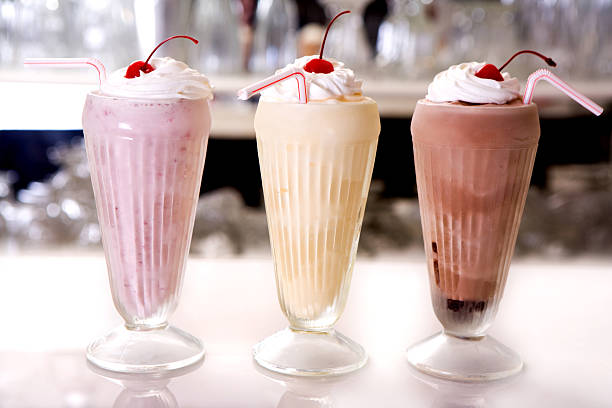

Milkshake recipe

Description
Whizz up a refreshing milkshake for a quick breakfast or treat. We've got indulgent chocolate, banana and strawberry flavours, plus fruity exercise shakes.
Ingredients
- 1 tbsp chocolate hazelnut spread (optional)
- 250ml semi-skimmed milk
- 2scoops chocolate ice creams
- 5 marshmallows
- 30ml double cream, whipped
- 1 tsp toasted hazelnuts, chopped
Steps
- Load the back of a teaspoon with a little of the chocolate spread and spread it in a long line from the bottom of the inside of the glass to the top. Put the rest of the chocolate spread into a bowl in the microwave or in a small saucepan over a low heat. Warm through for a few seconds just until runny and set aside.
- Put the milk and chocolate ice cream into a blender. Whizz everything up until smooth then pour into your prepared glass.
- Top with a layer of the marshmallows and a spoonful of whipped cream. Decorate with a drizzle of the warmed chocolate spread and a few toasted hazelnuts. Serve immediately with a straw.